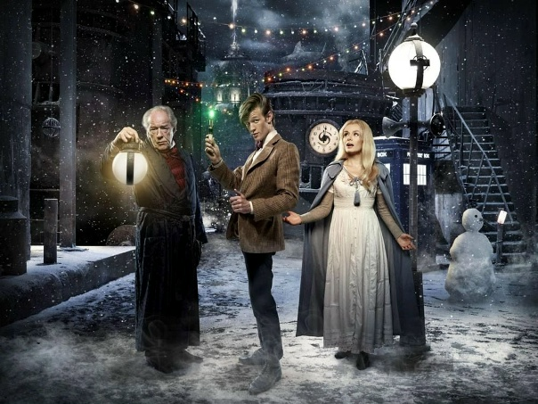

Эра Одиннадцатого Доктора
<<< НАЗАД ||| Рождественская песнь ||| ДАЛЬШЕ >>>
или
<<< НАЗАД к сериалу 👩🦰Приключения Сары Джейн
ДАЛЬШЕ >>> к мини-эпизодам
Субтитры: Русские {TrueTransLate} и Английские

A Christmas Carol
рождественский спецвыпуск
25 декабря 2010
Формат: 60-минутный эпизод
| Варианты озвучек: | * Разные: смотрите по инструкции чаще всего это нулевая серия шестого сезона |
|---|---|
| Скачивание и просмотр: |
Сюжет, написанный Стивеном Моффатом на основе одноимённой повести-сказке Чарльза Диккенса, показывает приключение Одиннадцатого Доктора, во время которого он пытается спасти терпящий крушение космический лайнер с Эми и Рори на борту, переписав прошлое единственного человека, который может ему помочь - Казрана Сардика, роль которого исполнил Майкл Гэмбон.

